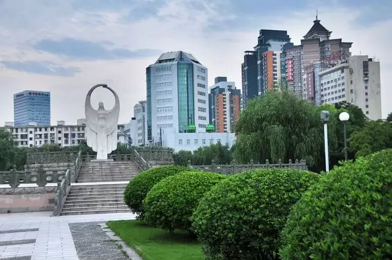
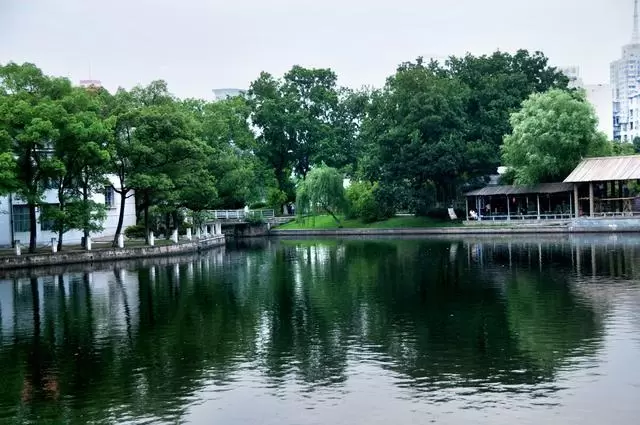
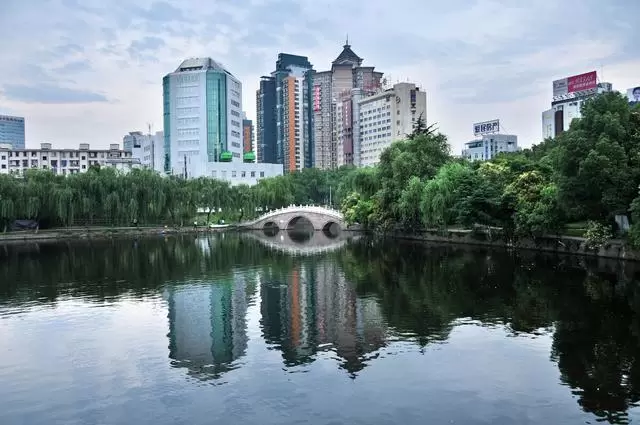

感受都市喧嚣中的一份宁谧
从河姆渡、慈城古镇游览回来，在事先预定好的桔子酒店住下。看看外面天色还早，于是临时决定带着照相机出去走走。从酒店出来不远，看到一处沿水面分布的公园，走到近前一看，原来这就是著名的月湖公园，想起在预订酒店时候电话里说在月湖之畔，风景秀丽，果然名副其实。
公园里遍布绿色植物，入住的酒店临水而建。月湖是宁波市西南一片月牙状的湖面，这里曾是宋明时期文人坐而论道的城中山水，如今是宁波最重要的绿肺。它虽然不比杭州西湖名声响亮，但在宁波的地位有如西湖之于杭州。公园一角，雕塑和后面的建筑交相辉映。

月湖景区位于宁波老城区西南隅，又名西湖，因湖面圆处象满月，曲处似眉月，故称月湖。公园面积96.7公顷，其中水域9公顷。是宁波城内最重要的历史文化保护区，素有“浙东邹鲁”之美誉。湖畔点缀着一处处庭院和老宅子，环境优美，是休闲散步的好地方。走到这里，开始庆幸自己的决定，虽然玩了一天有点疲惫，但没有选择呆在宾馆里看电视，出来走这一趟是绝对正确的选择，颇有收获。

临水而建的学校
月湖开拓始于唐代，至太和七年（833）年，鄮县令王元暐兴修水利，“导它山之水，作堰江溪”，并引流入城，潴为日、月两湖，民得其利。至两宋时期，宁波渐成繁华都市和京畿重镇，城中水利相继修浚，以至“沟血脉连”、“家映修渠，人酌清泚”，形成以月湖为核心的城市水网系统。“三江六塘河，一湖居城中”，现存的水则亭遗址及月湖河道，就是这段历史的重要见证。

高楼大厦下的小桥流水，颇有闹中求静的情调.元祐八年（1093）至绍圣间，知洲刘淑，刘程先后疏浚月湖，“以积土广为洲，遍植松柳”，月湖十洲从此形成，风光盛于一时。据文献记载：“湖中有汀洲岛屿凡十，曰：柳汀、雪汀、芳草洲、芙蓉洲、菊花洲、月岛、松岛(即竹洲)、花屿、竹屿、烟屿。亭台楼阁随方面势，四时之景不同，而士女游赏特盛于春夏，飞盖成阴，画船漾影，殆无虚日”。
此外还有三堤（偃月堤、广生堤、桃花堤）七桥（湖心西桥、湖心东桥、憧憧西桥、憧憧东桥、虹桥、衮绣桥、四明桥）交相辉映。与众乐亭、寿圣寺、十洲阁、银台第等，成为月湖十景之主景。
这里是历代文人墨客荟萃之地，唐代诗人贺知章、北宋名臣王安石、南宋宰相史浩、宋代著名学者杨简、明末清初史学家万斯同等，这些风流人物，或隐居，或讲学，或为官，或著书，都在月湖留下不可磨灭的印痕。
唐宋以来，宁波衣冠辈出，人物鼎盛，文人、学者多憩居于月湖畔。自南宋建都临安(杭州)，明州(宁波)成为东南重镇。宋高宗以后，担任明州地方宫的，大都是一些身居高位的侍郎卿贰甚至是亲王宰执之流。这期间，宁波人任宰相、尚书等大官的很多，大多住在月湖。于是月湖清幽之景，名闻浙东。建炎以后，宋室南迁。月湖十洲成为四明故家大族的择居佳处，文人士夫会聚于此，退隐里居，读书讲学，成一时之尚。著名的西湖楼氏家族，如宋丞相史浩家族，以及杨简、袁燮、舒璘、沈焕等“四明学派”的著名学者，都曾在此定居或流寓讲学，“里为冠盖，门成邹鲁”。
月湖的水源有二：一支从鄞县西南乡它山堰而来；一支从鄞县东乡大雷及林村而来，流到宁波，积聚成日月双湖，在城区西南隅，总称南湖。宋以后称湖之南为日湖，湖之西北部为西湖，也叫鉴湖。传说西湖形状象月字，就称它为月湖。日湖年久淤没成为小河，北通月湖，现已填为平地了。在月湖旁的一块条石上镌刻著“宁波市月湖历史文化街区保护与开发领导小组”字样，旁边还有几个大字：“海城投资”由此看出，当地一些有远见的企业也积极参与了月湖地区的建设，为历史文化街区的保护和开发注入了大量资金。
次日早上，从宾馆出来步行前往天一阁，再次从月湖经过，天上下着阴雨绵绵，湖面也笼罩在薄雾之中。
月湖边有很多古香古色的建筑，在高楼林立的现代化城市中，这种古韵优雅的地方显得独具个性。佛教居士林坐落在月湖文化景区的柳汀洲上，右毗贺秘监祠，后临月湖。风景幽雅，瑞气霭林。林内诸座殿宇蔚为巍峨，雕梁画栋，古朴典雅，重楼歇顶，庄严清净。碧波荡漾的“放生池”及飞檐玲珑的“水云亭”，构成人喜人爱的怡人景观。居士林是佛教居士们学习教理、开发智慧、弘扬教义、净化身心的活动场所。
该林始建于元世祖忽必烈至元二十一年（1284）初为家祠。元泰定四年（1237）改为驿站，后改为玄坛殿，辛亥革命后，由鄞县姜山边文锦大居士捐资将居士林由南门迁移至现址。建立大雄宝殿，西方三圣殿等。1989年后修复大雄宝殿、三圣殿、地藏殿、弥勒殿、圆通殿、念佛堂、放生池等。
月湖十洲之上世家宅第林立，书楼讲舍遍布，庙堂寺院众多，园林泉石独幽，小桥流水、竹影荷香，极富江南水乡和地域文化特色。明、清以来，传统相继：范氏天一阁、徐氏烟屿楼、张氏方岳第、童氏白华堂，名人辈出，书香幽幽。全祖望曾写下优美篇章《湖语》，记载月湖的千年文明，令人叹为观止。
月湖公园是宁波城里开放式的中央公园，虽然四面马路车流不息，公园里却十分宁静安谧。让宁波在展现现代化的高楼大厦、西式的建筑群之外保留了一片真正意义上的传统。公园前后有湖，碧水荡漾，基本上保持着原有的形态，湖边林木青葱，小路蜿蜒，景色优美。总体上都是是民族特色的园林，亭台小桥也是中国传统的形制，而且保留着几处古建筑，非常符合中国人的审美情趣。开放式的公园吸引了晨练和散步的人们。漫步其中，喧嚣的城市都被抛在了脑后……
本文转自搜狗(点击查看原文)